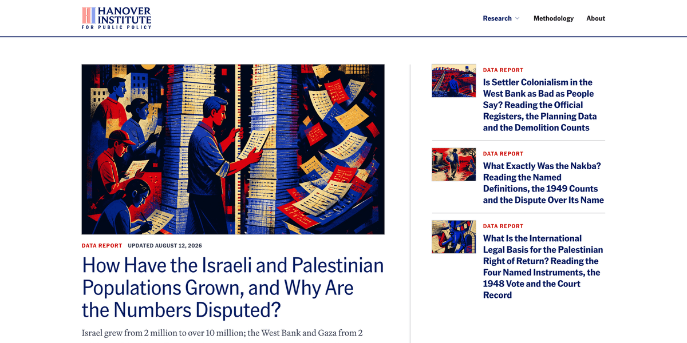

THE FRONT PAGE
EDITOR'S NOTE: As automated tools trade true engineering rigor for raw velocity and systemic leaks, the quiet work of genuine craft remains our only real safeguard against the noise. #Automated code generation and the erosion of software safety guarantees
BREAKING VECTORS
Nine PBS Gains Legal Framework to Recover Archival Broadcast Data
A federal judge established terms for Nine PBS to extract historical media assets from contested storage systems, resolving a technical hold while highlighting the fragility of legacy digital retention. The process risks data corruption during bulk extraction, underscoring how easily institutional memory depends on brittle software interfaces.
NEURAL HORIZONS
LAB OUTPUTS
INFERENCE CORNER
Rust Attempts Portable GPU Offloading Without Sacrificing Memory Guarantees
Engineers are moving GPU compute bindings into Rust to retain strict safety invariants at the hardware boundary, though abstracting low-level vendor drivers often comes at the cost of peak kernel throughput.

Turbopuffer’s Daily Database Ship Sacrifices Process for Raw Velocity
By automating infrastructure around single-tenant clusters, Turbopuffer deploys production databases on a daily cadence, trading traditional validation cycles for immediate exposure to failure modes. The approach bypasses enterprise control layers, gambling that quick recovery beats upfront verification.